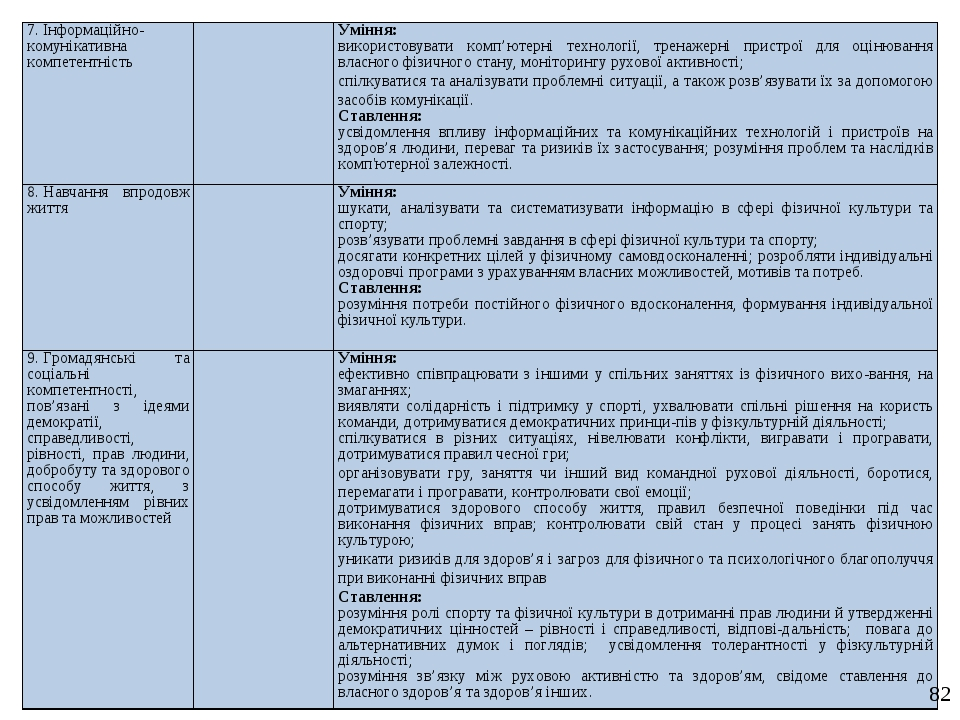

Мета фізичного виховання розкривається та конкретизується в загальних завданнях, які вирішуються залежно від особливостей вікового розвитку дитини.
Вивчаючи особливості кожного вікового періоду. Дошкільний період має велику пластичність та сприйнятливість до засобів фізичної культури. У цей час створюються найсприятливіші умови для реалізації освітніх, оздоровчих та виховних завдань.
Оздоровчі завдання – спрямовані на охорону життя, зміцнення здоровя, загартування та удосконалення функцій організму дітей, підвищення фізичної та розумової працездатності, розвиток рухових якостей, формування правильної постави та профілактики плоскостопості.
Освітні завдання – спрямовані на формування рухових вмінь і навичок, ігрових дій і здобування доступних уявлень та знань про користь занять фізичною культурою і іграми, знання про основні гігієнічні вимоги та правила. (Завдяки пластичності нервової системи у дітей дуже швидко встановлюються нервові зв’язки та формуються умовні рефлекси).
Виховні завдання – спрямовані на формування позитивних моральних і вольових рис характеру дитини засобами фізичної культури.
У процесі фізичного виховання дітей необхідно враховувати вікові періоди а анатомо-фізіологічні особливості розвитку дитячого організму. Тільки з врахуванням цих особливостей необхідно будувати процес навчання та розвитку дітей.
В сучасній науці немає загальноприйнятої класифікації періодів росту і розвитку, а також їх вікових границь. Але існує прийнята схема вікової періодизації, де виділяють такі періоди (Вискине З.А.):
I. – новонароджений: до 10 днів
II. – грудний вік: 10днів – 1 рік
III. – раннє дитинство: 1-3 роки
IV. – перше дитинство: 4-7 років
V. – друге дитинство: 8-12 років
VI. – підлітковий період: 13-16 років
VII. – юнаки 16-21
VIII. – зрілий вік: жінки 21- 55; чоловіки 21-60
IX. Похилий вік: жінки 56-74; чоловіки 61-74
2.Компетентнісний потенціал предмета «Фізична культура».
 Источникпункт 1.1
Источникпункт 3
Источникпоеск по ключу "Використання бальної оцінки в системі педагогічного контролю фізичної підготовленості школярів"
ИсточникПлан-конспект уроку – найбільш конкретний план роботи вчителя, відноситься до оперативного планування. Він завершує систему планування і виконує в ній організаційну функцію. Конспект розробляється на основі безпосередньої підготовки вчителя до уроків. Він містить конкретні завдання, які повинен вчитель розв'язати на даному уроці з врахуванням рівня підготовленості учнів, в ньому послідовно записуються вправи, що підлягають вивченню на уроці, теоретичні відомості і навчання. В конспекті знаходять відображення дозування фізичних вправ, методи і прийоми роботи вчителя, шляхи взаємодії педагога і учнів та інші питання.
Источник.1 - форма Источник.2???
ИсточникНавчальна програма «Фізична культура. 5–9 класи» розроблена на підставі Державного стандарту базової і повної загальної середньої освіти (Постанова Кабінету Міністрів України від 23. 11. 2011 р. № 1392) з урахуванням Державного стандарту початкової загальної освіти (Постанова Кабінету Міністрів України від 20. 04. 2011 р. № 462) та відповідно до положень «Концепції Нової української школи» (2016)
Програма характеризується спрямованістю на реалізацію принципу варіативності, який передбачає планування навчального матеріалу відповідно до віково-статевих особливостей учнівства, їхніх інтересів, матеріальнотехнічного забезпечення навчального процесу, кадрового забезпечення.
Навчальна програма забезпечує:
Навчальна програма побудована за модульною системою. Вона містить інваріантну (обов’язкову) та варіативну складову. До інваріантної частини належать: теоретико-методичні знання та загальна фізична підготовка, зміст яких реалізовується упродовж кожного уроку. Практично кожен вид спорту може бути представлений у вигляді варіативного модуля. Фахівці фізичної культури можуть розробляти свої варіативні модулі до цієї програми. Програми варіативних модулів мають пройти експертизу, отримати гриф Міністерства освіти і науки України та бути оприлюдненими для загального користування. Отже, кількість варіативних модулів з часом має зростати.
Змістове наповнення варіативної складової навчальний заклад формує самостійно із модулів, запропонованих навчальною програмою. У 5–6 класах учні мають опанувати 4–6 варіативних модулів, у 7–8 класах – 3–5, у 9 класі – 3–4 модулі. На опанування обраних модулів відводиться приблизно однакова кількість годин, але не менше ніж 18. Однак не виключається можливість мотивованого збільшення чи зменшення кількості годин на вивчення окремих модулів.
Програми варіативних модулів розроблено на п’ять років. Вони містять пояснювальну записку, зміст навчального матеріалу, очікувані результати навчально-пізнавальної діяльності учнів/учениць, орієнтовні навчальні нормативи та перелік обладнання, потрібного для освоєння модуля.
Критеріями відбору варіативних модулів є: наявність матеріальнотехнічної бази, регіональні спортивні традиції, кадрове забезпечення та 10 бажання учнів/учениць. Бажання учнів/учениць визначається обов’язковим опитуванням. Перед початком навчального року шкільне методичне об’єднання розглядає вибір та розподіл варіативних модулів у кожному класі.
Наприклад, учні/учениці вивчають: у 5 класі – футбол (1 рік вивчення), волейбол (1 рік вивчення), легку атлетику (1 рік вивчення), плавання (1 рік вивчення) та лижну підготовку (1 рік вивчення); у 6 класі – футбол (2 рік вивчення), волейбол (2 рік вивчення), плавання (2 рік вивчення), легку атлетику (2 рік вивчення) та бадмінтон (1 рік вивчення); у 7 класі – футбол (3 рік вивчення), легку атлетику (3 рік вивчення), плавання (3 рік вивчення) та бадмінтон (2 рік вивчення); у 8 класі – футбол (4 рік вивчення), настільний теніс (1 рік вивчення), гімнастику (1 рік вивчення) та баскетбол (1 рік вивчення); у 9 класі – футбол (5 рік вивчення), гімнастику (2 рік вивчення) та баскетбол (2 рік вивчення). За потреби у 6–9 класах у межах одного варіативного модуля можна освоїти навчальний матеріал, передбачений на два роки вивчення.
У разі освоєння двох варіативних модулів протягом одного навчального року та у випадку, коли вивчення модуля розпочинається не з 5 класу, учитель повинен скоригувати змістове наповнення варіативного модуля та нормативи оцінювання.
ИсточникОсновною формою організації навчально-виховного процесу з фізичної культури в загальноосвітньому навчальному закладі є урок. На уроках фізичної культури здійснюються міжпредметні зв’язки з історією, музикою, хореографією, основами здоров’я та іншими предметами.
Головними вимогами до сучасного уроку фізичної культури є:
Важливою умовою здійснення навчально-виховного процесу з фізичної культури є дотримання дидактичних принципів навчання: свідомості й активності; наочності; доступності та індивідуалізації; систематичності та послідовності; міцності та науковості. Творче використання на уроках фізичної культури цих дидактичних принципів вимагає застосування адекватних методів навчання.
Враховуючи психологічні особливості молодших школярів, уроки фізичної культури повинні викликати в учнів позитивні емоції, з цією метою необхідно творчо використовувати ігрові методи, музичний супровід, сучасні комп’ютерні технології тощо.
Більшість уроків фізичної культури доцільно проводити на відкритому повітрі (узимку в тиху погоду при температурі не нижчій – 12 градусів). У приміщенні, де проводяться уроки фізичної культури, температура повітря має бути не нижча +14 градусів.
У теплу погоду на відкритому повітрі та у спортивному залі форма одягу учнів – спортивні труси, футболка, спортивне взуття, у прохолодну погоду – спортивний костюм, спортивне взуття.
За результатами медичного огляду школярі тимчасово розподіляються на основну, підготовчу і спеціальну медичні групи. Всі вони відвідують обов’язкові уроки, але виконують загальнорозвивальні й коригувальні вправи з різним фізичним навантаженням (індивідуальний підхід) та ті, які їм не протипоказані.
На сучасному етапі розвитку освіти в Україні взаємини між учасниками навчально-виховного процесу ґрунтуються на принципах педагогіки співробітництва, що передбачає взаємну довіру, взаємоповагу, що сприяють вирішенню завдань фізичного виховання учнів сучасної школи.
Комплексне вирішення завдань фізичного виховання школярів – справа всього педагогічного колективу, що здійснюється відповідно до Положення про організацію фізичного виховання в дошкільних, загальноосвітніх та професійно-технічних навчальних закладах (наказ МОН України від 02.08.2005 № 458) і Системи організації фізкультурно-оздоровчої та спортивної роботи в дошкільних, загальноосвітніх, професійно-технічних та позашкільних навчальних закладах (наказ МОН України від 21.07.2003 № 486).
Етап безпосередньої підготовки характеризується виконанням вчителем наступних дій:
Спрямовані вчителем до уроку повинні готуватись і учні. Суть їхньої підготовки полягає у:
1.1 Класифікація уроків фізичної культури
ИсточникОсновною метою фізкультурно-оздоровчих заходів у режимі навчального дня є створення передумов для оптимальної розумової працездатності школярів середніх і старших класів на будь-яких уроках, причому йдеться як про підвищення, так і про відновлення розумової працездатності. Звичайно, фізичні вправи в режимі навчального дня вельми обмежені за змістом, оскільки підпорядковані розв'язанню досить вузьких гігієнічних задач. Але якщо вони виконуються щоденно, то можуть суттєво доповнювати будь-які уроки, роблячи значний внесок у гармонійний фізичний розвиток школярів.
Отже, дану форму організації фізичного виховання учнів середнього та старшого шкільного віку складають ранкова гімнастика, фізкультурні хвилини й паузи, виконання фізичних вправ на подовженій переміні. Всі вони повинні слугувати раціональній організації навчальної праці. Доцільність їхнього проведення підтверджується інтенсифікацією навчального процесу, збільшенням зайнятості школярів середніх і старших класів видами діяльності, що істотно обмежують рухливість.
Серед основних задач фізкультурно-оздоровчих заходів у режимі навчального дня можу назвати такі: 1) активізація рухового режиму протягом навчального дня; 2) впровадження елементів фізичної культури у повсякденний побут школярів; 3) зміцнення їхнього здоров'я та вдосконалення культури рухів; 4) забезпечення гігієни розумової праці й підтримання оптимального рівня працездатності у навчальній діяльності; 5) формування навичок організованості, свідомої дисципліни.
...
ИсточникВідбір здібних спортсменів у процесі багаторічного тренування має три основних етапи:
Спортивний відбір і орієнтація – практично безперервний процес, який обіймає собою всю багаторічну підготовку спортсмена. Це обумовлено неможливістю чіткого вияву здібностей на окремому етапі вікового розвитку або багаторічної підготовки, складним характером взаємовідносин між спадковими факторами, які виявляються у вигляді задатків, і набутими, які є наслідком спеціально організованого тренування. Справжні здібності можуть бути виявленими лише в процесі навчання і виховання.
Завдання відбору й орієнтації на різних етапах різноманітні. Якщо на першому етапі важливо перш за все визначити доцільність занять обраним видом спорту для того чи іншого підлітка, то на наступних етапах коло задач значно поширюється: орієнтація спортсмена на спеціалізацію у конкретних номерах програми, відбір у збірні команди та ін.
Источник.1 Источник.2???
Источник???
Источник???
ИсточникСила – це можливість долати зовнішню протидію або протидіяти їй за допомогою м`язових зусиль. Досягнення в єдиноборствах в цілому визначаються відповідним рівнем розвитку абсолютної сили.
Варто зазначити, що в цілому віковий розвиток різних груп м`язів проходить нерівномірно та індивідуально, будь яка з них проходить свій специфічний шлях, хоча для всіх груп м`язів властиве постійне зростання з звеличенням абсолютного показника сили.
У дівчат 9-10 років істотно зростає сила згиначів кисті та м`язів спини, в 10-11 років всіх груп м`язів, з 12-13 років згиначів пальців кисті та спини. У хлопчиків показники вибухової сили з роками покращуються досягаючи максимуму у 15-17 роках.
Для виконання силових вправ використовуються декілька методичних прийомів збільшення маси: меншу за граничну; граничну; граничну з максимальною швидкістю. Виходячи з цього розрізняють три методи розвитку сили: метод максимальних зусиль; метод рівномірних зусиль; метод динамічних зусиль.
ИсточникШвидкість – здатність здійснювати рух в мінімальний термін часу.
Швидкість проявляється через такі здібності людини: швидкість простої та складної реакції; швидкість окремої рухової дії; частота рухів(темп).
Швидкість простої та складної реакції в юних спортсменів з віком майже не змінюється.
Темп рухів у дітей з 7 до 16 років зростає в півтора рази, пари цьому найбільш інтенсивно з 7 до 9 років.
Основою методики виховання швидкості є вправи, які треба виконувати з максимальною (граничною) інтенсивністю, на протязі короткого часу.
Вправи, які використовуються для виховання швидкості не повинні бути одноманітними та відповідати таким вимогам:
Витривалість – здатність довгий час виконувати роботу не знижуючи її продуктивність.
У хлопців в підлітковому віці витривалість зменшується, в юнацькому знову звеличується. У дівчат з 8 до 14 років цей показник постійно звеличується, після 14 років різко зменшується.
Виховання витривалості досягається доведенням організму до стадії стомленості під час занять. В єдиноборствах для розвитку витривалості треба звернути на підвищення працездатності під час виконання різноманітних загально-підготовчих вправ.
ИсточникГнучкість – здатність виконувати рухи з максимальною амплітудою. Розрізняють гнучкість активну та пасивну. Активна гнучкість – здатність досягати великої амплітуди рухів за рахунок власної активності, пасивна гнучкість це гнучкість яку можна досягти при використанні зовнішніх сил. Гнучкість залежить від: Еластичності м`язів та суглобів, стану центральної нервової системи, зовнішньої температури, часу доби.
Зростання показників сумарної рухової активності хребта у хлопчиків та дівчат 7-17 років відбувається нерівномірно. У хлопчиків найбільш високий приріст спостерігається з 7 до 10 років, з 11 до 13 років він зменшується, з 14 років знову збільшується та досягає максимуму в 15 років. Після цього гнучкість хребта знову зменшується до рівня, на якому вона знаходилась в 9 річному віці.
ИсточникВ основі методики розвитку координаційних здібностей має бути виконання завдання в ускладнених умовах.
При вихованні координаційних здібностей можна використати будь-які вправи за умови, що вони включають елемент новизни. У міру автоматизації навички значення цієї вправи для розвитку координації зменшується. Для забезпечення новизни використовують наступні методичні прийоми:
При 61 використанні ігрового методу навантаження регулюють шляхом зміни тривалості ігрових завдань, інтервалів відпочинку, розмірів ігрового майданчика, кількості гравців, зміною їх ігрового амплуа. Сумарна тривалість ігрових завдань складає від 20-30 до 60 хвилин при ЧСС від 110- 120 до 160-170 уд. хв. Використання ігрового методу сприяє комплексному вдосконаленню загальної, швидкісної і силової витривалості.
Змагальний метод являє собою це один з варіантів стимулювання інтересу та активізації діяльності займаючихся з установкою на перемогу або досягнення високого результату в будь-якої фізичнї вправи при дотриманні правил змагань
Іншими словами, відмінною рисою змагального методу є зіставлення сил в умовах упорядкованого суперництва. Змагальний метод застосовується для вирішення наступних завдань: виховання фізичних, вольових і моральних якостей, вдосконалення техніко-тактичних умінь і навичок, а також здібностей раціонально використовувати їх в ускладнених умовах.
Він використовується або в елементарних формах (наприклад, проведення випробувань в процесі занять на краще виконання елементів техніки рухів: хто більше разів потрапить в баскетбольне кільце м'ячем, хто 35 стійкіше приземлиться та ін.), або у вигляді офіційних і напівофіційних змагань, яким надається в основному підготовчий характер (прикидки, контрольні, класифікаційні змагання). До позитивних рис змагального методу можна віднести те, що фактор суперництва, умови організації та проведення змагань сприяють мобілізації людини і створюють сприятливі умови для максимального прояву фізичних можливостей, інтелектуальних, емоційних і вольових зусиль. Крім того, свідоме виконання вимог і правил, які пред'являються до займаються в ході змагань, привчає їх до самовладання, вміння стримувати негативні емоції, бути дисциплінованими.
Источник???
Источникс 42ст
Источникhttps://studopedia.com.ua/1_137604_shchilnist-uroku-vidi-ta-sposobi-ii-regulyuvannya.html
Источник???
Источник???
Источник